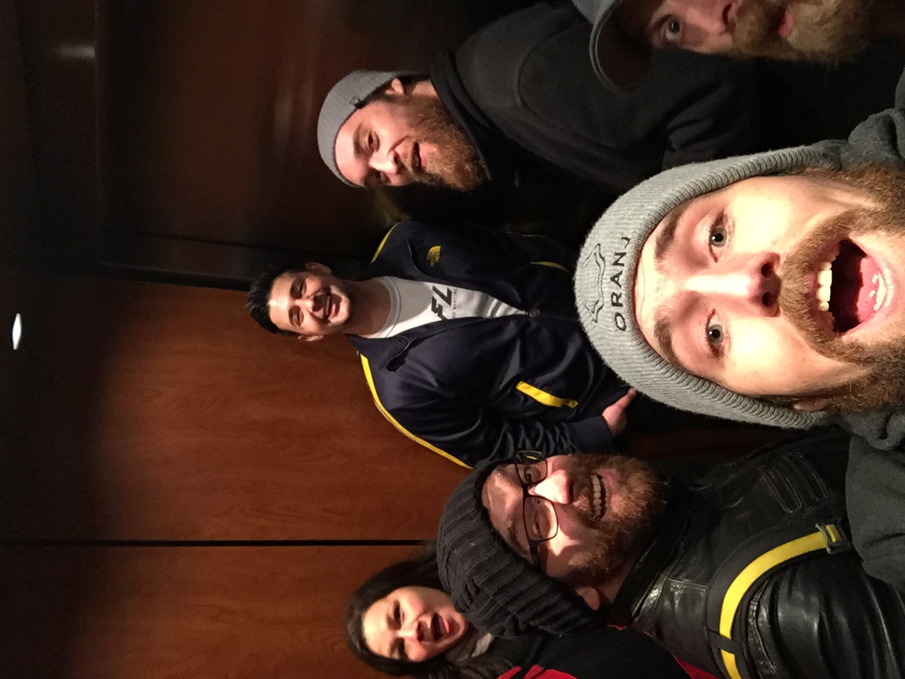

<mat-sidenav-container class="example-container">
    <mat-sidenav #sidenav mode="side" [(opened)]="opened">

        <div id="controls" class="controls">
            <div>Shake</div>
            <label><input id="amplitudeX" type="range" min="0" max="50" step="1" value="0" /> Amplitude X</label>
            <label><input id="amplitudeY" type="range" min="0" max="50" step="1" value="0" /> Amplitude Y</label>
            <label><input id="rotation" type="range" min="0" max="20" step="1" value="0" /> Rotation</label>
            <label><input id="frequency" type="range" min="0" max="10" step="0.01" value="0" /> Frequency</label>
            <label><input id="octaves" type="range" min="1" max="4" step="1" value="0" /> Octaves</label>
            <label><input id="autoScale" type="checkbox" /> Auto Scale</label>
            <label><input id="preScale" type="range" min="0" max="1" step="0.0001" value="0" /> Pre-Scale Amount</label>


            <div>Glitch</div>
            <label><input id="verticalSync" type="range" min="0" max="1" step="0.01" value="0" /> Amplitude X</label>
            <label><input id="distortion" type="range" min="0" max="1" step="0.01" value="0" /> Amplitude X</label>

        </div>

    </mat-sidenav>

    <mat-sidenav-content>
        <div>
            <!---->
            <canvas id="canvas" width="640" height="360"></canvas>
            <br><br>
            <mat-slider></mat-slider>
            <button mat-button (click)="sidenav.toggle()">sidenav.toggle()</button>
            <br><br>
            <video #vid style="width: 100px;" controls="true" src="{{video}}" id="vid"></video>

        </div>


    </mat-sidenav-content>
</mat-sidenav-container>